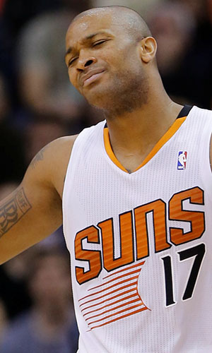

|  |
Матчи |
78 |
|
Передачи (всего/среднее) |
121 |
1.6 |
| В основе |
63 |
|
Подборы в защите (всего/среднее) |
388 |
5 |
| Время (всего/среднее) |
2383:27 |
30:33 |
Подборы в атаке (всего/среднее) |
114 |
1.5 |
| Очки (всего/среднее) |
713 |
9.1 |
Подборы (всего/среднее) |
502 |
6.4 |
| 2-очковые броски (всего/среднее) |
174/344 |
2.2/4.4 |
Перехваты (всего/среднее) |
107 |
1.4 |
| 2-очковые броски (% реализации) |
50.6% |
|
Потери (всего/среднее) |
96 |
1.2 |
| 3-очковые броски (всего/среднее) |
87/252 |
1.1/3.2 |
Блокшоты (всего/среднее) |
23 |
0.3 |
| 3-очковые броски (% реализации) |
34.5% |
|
Блокшоты соперника (всего/среднее) |
32 |
0.4 |
| Штрафные броски (всего/среднее) |
104/143 |
1.3/1.8 |
Фолы (всего/среднее) |
179 |
2.3 |
| Энтони Такер |
Штрафные броски (% реализации) |
72.7% |
|
Коэффициент полезности (всего/среднее) |
785 |
10.1 |